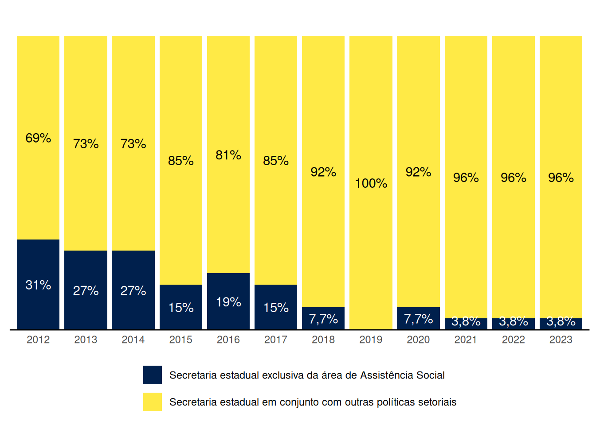
2 Gestão e Financiamento
O Sistema Único de Assistência Social (SUAS) é definido pela Lei Orgânica da Assistência Social (LOAS) como um sistema descentralizado e participativo que organiza a gestão das ações na área de assistência social a partir das diretrizes: descentralização político administrativa, participação social e primazia da responsabilidade do Estado na condução da política de assistência social. Assim, tem como um de seus objetivos a consolidação da gestão compartilhada dos três entes federados.
A LOAS, a Norma Operacional Básica da Assistência Social - NOB/SUAS 2012 e outros normativos que regulam a assistência social definem as responsabilidades da União, Estados, Distrito Federal e Municípios no âmbito da gestão compartilhada, que incluem o cofinanciamento de serviços, programas e ações da assistência social. Estão previstas ainda instâncias de pactuação e interlocução entre os três entes federados: a Comissão Intergestores Bipartite (CIB), da qual participam representantes de Estados e Municípios, e a Comissão Intergestores Tripartite (CIT), da qual participam, além de Estados e Municípios, representantes do Governo Federal.
2.1 Estrutura Administrativa, Normas e Planejamento
A partir das informações contidas no Censo SUAS é possível ter um panorama geral da gestão e do financiamento em Estados e Municípios pela observação de aspectos da estrutura administrativa da gestão da Assistência Social, institucionalização da política através de lei, do apoio de Estados aos Municípios, das ações de cofinanciamento e transferência de recursos, do funcionamento das instâncias de pactuação, entre outros.
A estrutura administrativa na Política de Assistência Social e a constituição de setores essenciais são elementos importantes para a gestão do SUAS. No âmbito da gestão estadual percebe-se que desde 2012 há uma redução de secretarias estaduais exclusivas de Assistência Social. Em 2012, 8 Estados (31% dos 26 Estados)1 tinham secretarias estaduais exclusivas da área de Assistência Social. Desde 2021 apenas o Estado do Amazonas possui secretaria estadual exclusiva da área de Assistência Social (Gráfico 2.1).
O Gráfico 2.2 mostra a quantidade de outras políticas setoriais que estão incorporadas nas pastas da Assistência Social estaduais. Vemos que na maioria dos Estados a Secretaria Estadual responsável pela área de Assistência Social incorpora outras duas ou três políticas setoriais.
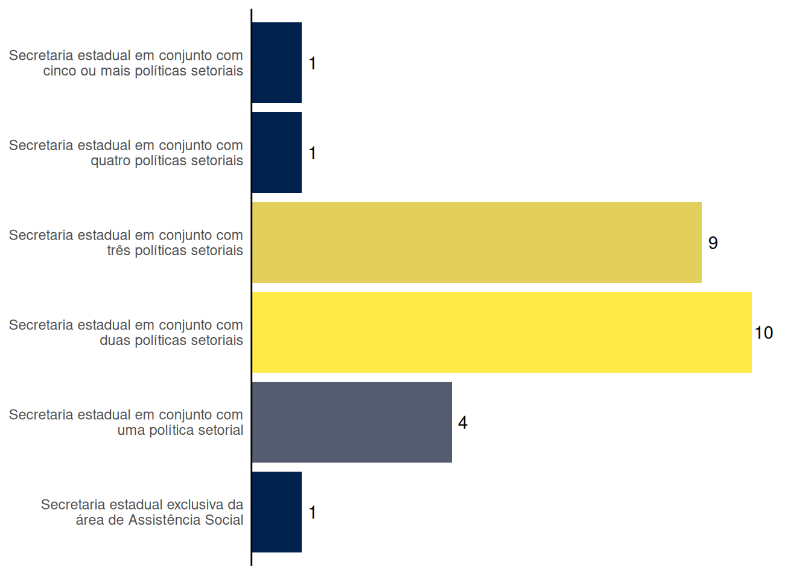
Na estrutura administrativa da Assistência Social nos Municípios observa-se, em 2023, um aumento no percentual de Municípios que possuem secretaria municipal exclusiva da área de Assistência Social (Gráfico 2.3). De 2012 a 2019 esse percentual oscilou entre 77% e 79%, de 2020 a 2022 essa pergunta foi retirada do formulário da Gestão Municipal, e, na volta da pergunta, em 2023, o percentual de Municípios que possuem secretaria municipal exclusiva da área de Assistência Social aumentou para 82%.
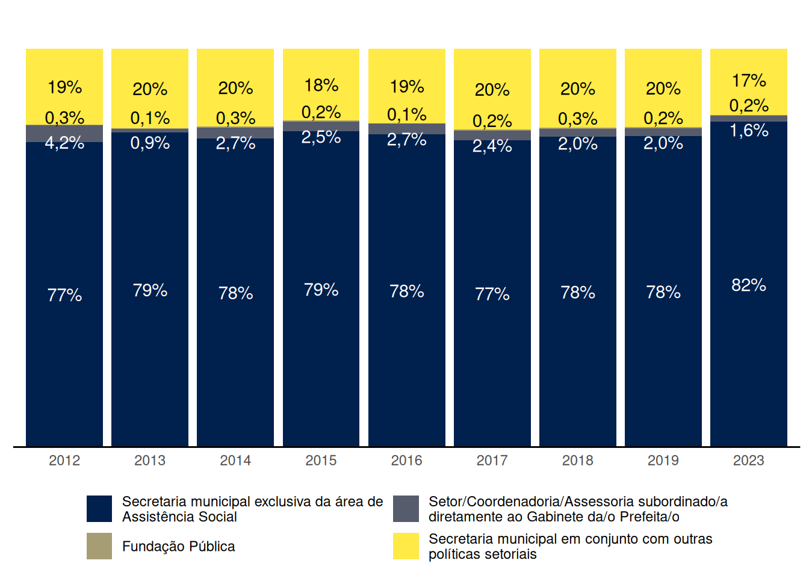
Para o aprimoramento da gestão do SUAS entende-se ser necessário que as diversas áreas da Assistência Social sejam constituídas formalmente na estrutura do órgão gestor. Alguns órgãos gestores estaduais constituíram as áreas de assistência social como subdivisões administrativas em sua estrutura, como superintendências, departamentos, gerências, coordenações, dentre outras. No Gráfico 2.4 observamos que tem avançado a constituição formal das áreas da Assistência Social na estrutura administrativa dos órgãos gestores estaduais.
As três áreas mais instituídas formalmente em 2023 são: Proteção Social Básica e Proteção Social Especial, com 88% dos Estados, e Gestão do SUAS, com 85% dos Estados. Os setores que em 2023 não estavam constituídos em 100% dos Estados, nem informalmente, eram os de Gestão do SUAS, Gestão Financeira e Orçamentária, Vigilância Socioassistencial, Gestão de Benefícios Assistenciais, Gestão do Trabalho e Regulação do SUAS, esta última na pior situação, não estando constituída em 23% dos Estados.
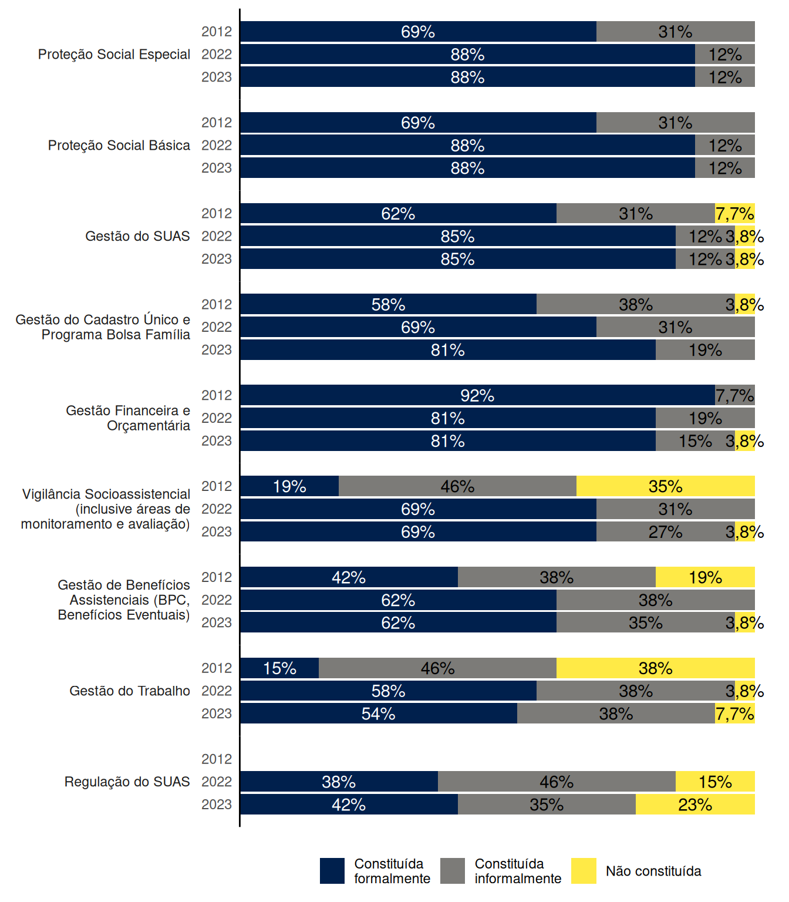
No que se refere aos Municípios, o Gráfico 2.5 mostra crescimento da constituição formal de praticamente todas as áreas administrativas. As áreas do SUAS com maior percentual de constituição formal nos órgãos gestores municipais são, em ordem decrescente: Gestão do Cadastro Único e Programa Bolsa Família, Proteção Social Básica e Gestão do SUAS. Já as áreas que possuem os menores percentuais de constituição formal são as de Gestão do Trabalho, de Vigilância Socioassistencial e de Regulação do SUAS. Embora tenha crescido 2 pontos percentuais em 2023, de 53% para 55% dos Municípios, destaca-se negativamente também a de Proteção Social Especial, cuja existência é recomendada independente da presença de CREAS.

A uniformização da Lei do SUAS dos Estados e Municípios em consonância com a LOAS foi deliberada na X Conferência Nacional, em dezembro de 2015. No Censo SUAS 2023, 6 Estados informaram ter ocorrido atualização da Lei Estadual de regulamentação do SUAS neste mesmo ano, ou seja, 2023. Outros 9 Estados informaram ter ocorrido atualização da Lei Estadual entre 2018 e 2022, e mais 6 Estados informaram que a última atualização da Lei Estadual ocorreu até 2017, totalizando 21 Estados que informaram possuir Lei do SUAS, como pode ser visto no Gráfico 2.6.
Portanto, ainda restavam 5 Estados que não possuíam Lei do SUAS, sendo eles: Roraima, Tocantins, Piauí, São Paulo e Santa Catarina.
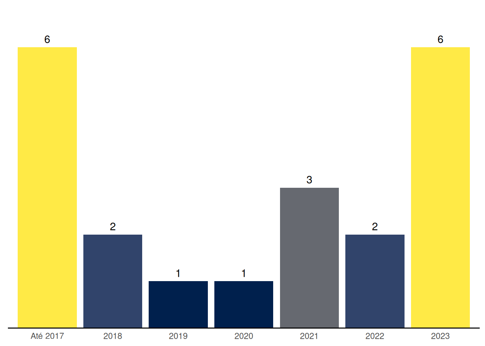
Em 2023, 4,2% dos 5.519 Municípios que responderam ao Censo SUAS informaram ter ocorrido naquele mesmo ano aprovação ou atualização da Lei Municipal de regulamentação do SUAS. Com isso, 78% dos Municípios que responderam ao Censo informaram possuir Lei Municipal de regulamentação do SUAS, sendo que 72% aprovaram ou atualizaram suas leis municipais após 2013, ou seja, após atualização da Lei Nacional2 e após a NOB SUAS/2012 (Gráfico 2.7).
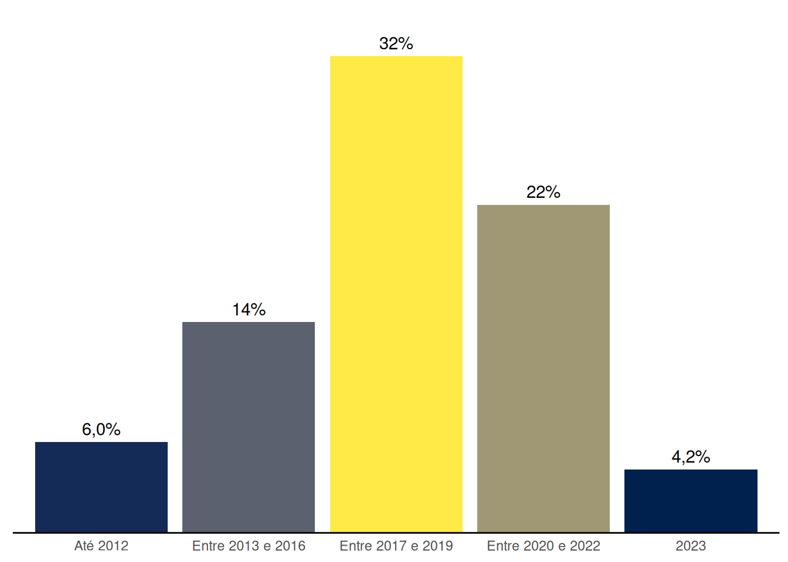
Em 2023 manteve-se em apenas 15 o número de Estados que possuíam Plano de Apoio Técnico aos Municípios pactuado na Comissão Intergestores Bipartite (CIB). A realização deste plano pelos Estados está prevista no último pacto de aprimoramento Estadual do SUAS3. Em 2018 22 Estados pactuaram o plano na CIB, o maior número da série histórica (Gráfico 2.8).
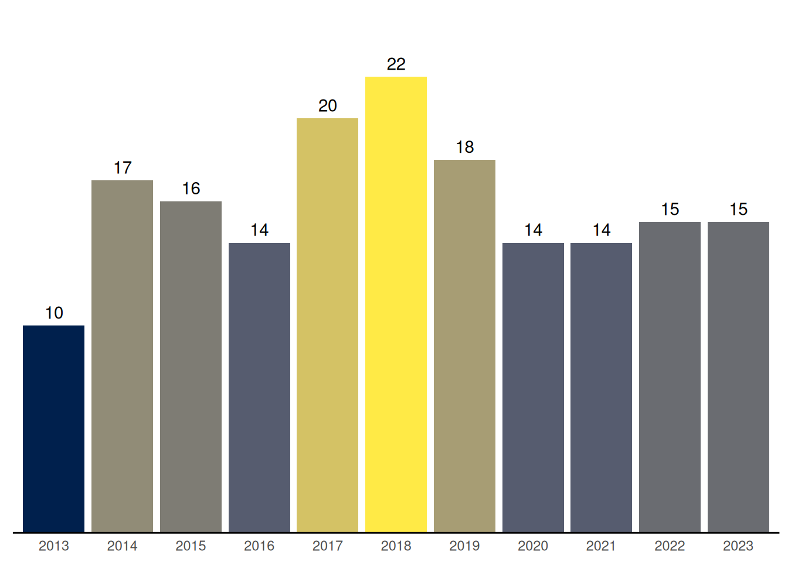
A NOB SUAS 2012 estabelece que os Planos de Assistência Social4 devem observar ações de apoio técnico e financeiro à gestão descentralizada do SUAS, compreendendo, entre outras ações:
- Capacitação;
- Elaboração de normas e instrumentos;
- Publicação de materiais informativos e de orientações técnicas;
- Assessoramento e acompanhamento; e
- Incentivos financeiros.
O Censo SUAS 2023 mostrou um aumento no número de Estados que ofertaram cada tipo de ação de apoio técnico aos Municípios, em todos os tipos de ações perguntados no Censo (Gráfico 2.9). Todos os 26 Estados relataram ter realizado apoio técnico individualizado a Municípios específicos e encontros/eventos de apoio técnico presenciais. O número de Estados que relataram possuir Centrais de Relacionamento dobrou de 2022 para 2023, de 3 para 6 Estados, mas ainda é a ação das listadas no Censo com menor número de Estados que possuem.

Desde 2020 observa-se um aumento a cada ano no percentual de Municípios que informaram ter recebido visitas de apoio técnico do Estado, chegando a 42% dos Municípios em 2023 (Gráfico 2.10).
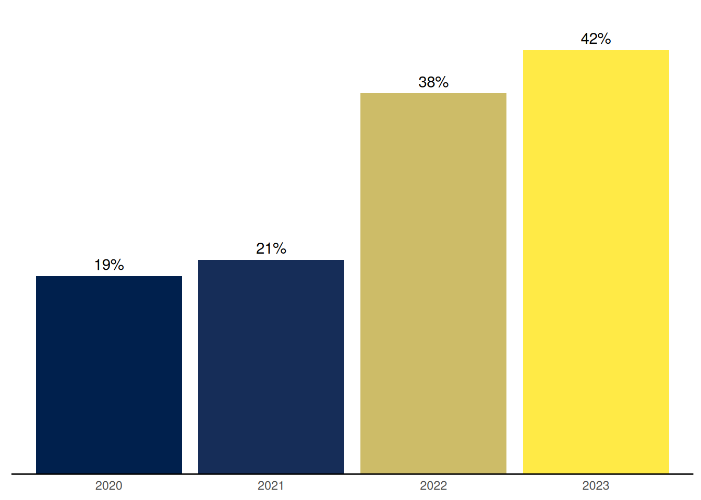
O Núcleo de Educação Permanente é foro constituído pela participação e cooperação institucionalizada de gestores, trabalhadores, usuários, conselheiros de Assistência Social e instituições de ensino, pesquisa e extensão. O objetivo é deliberar sobre a implementação continuada da Política de Educação Permanente do SUAS.
Observa-se nos últimos anos um aumento no número de Estados que possuem Núcleo de Educação Permanente implantado de maneira formal, chegando em 2023 a 24 Estados, conforme mostrado no Gráfico 2.11. Apenas os Estados de Rondônia e do Rio Grande do Sul não possuíam Núcleo de Educação Permanente implantado.
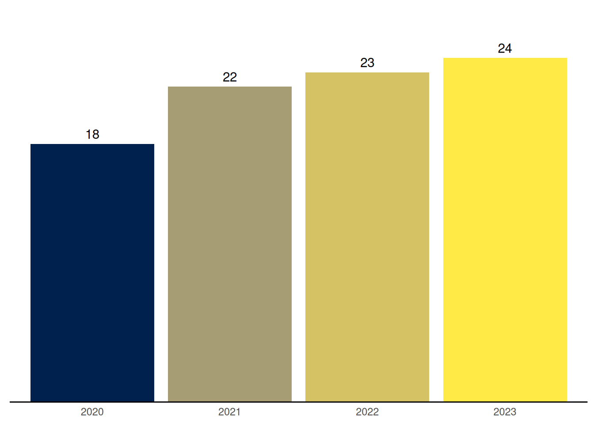
Em relação ao Plano de Educação Permanente, o Censo SUAS 2023 mostrou um aumento de 5 pontos percentuais nos Municípios que possuem este plano, chegando agora a 19% (Gráfico 2.12).
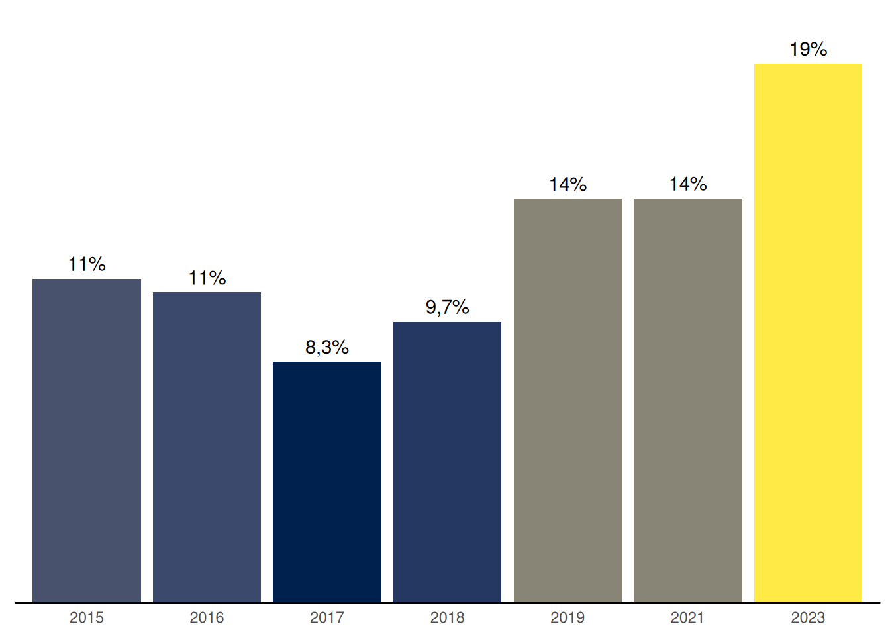
2.2 Financiamento e Gestão Financeira
O modelo de gestão do SUAS prevê cofinanciamento compartilhado entre os três entes federados5. O Censo SUAS mostra que nos últimos 3 anos apenas 1 Estado (3,8% dos Estados) em cada ano não cofinanciou os Municípios (Goiás em 2021, Acre em 2022 e Maranhão em 2023), como mostra o Gráfico 2.13.
O cofinanciamento deve ser realizado por meio de transferência automática regular entre os fundos de Assistência Social (fundo-a-fundo). Observa-se no Gráfico 2.13 que desde 2017 todos os Estados que realizaram cofinanciamento aos Municípios fizeram por meio de transferência fundo-a-fundo, exceto em 2021, quando 1 Estado realizou cofinanciamento apenas por convênio.

Olhando para os blocos de financiamento nos quais ocorreram destinação dos recursos transferidos pelos Estados aos Municípios (Gráfico 2.14) verificamos que o bloco de Serviço de Proteção Social Especial de Média Complexidade manteve-se em 2023 como o de maior número de Estados (23) que destinaram recursos a ele (apenas o Maranhão, que não realizou cofinanciamento, Tocantins e Mato Grosso não destinaram recursos a este bloco). E o bloco de Incentivo financeiro para Gestão do SUAS manteve-se como o de menor número de Estados, com apenas 3 Estados (Acre, Amazonas e Paraná) destinando recursos a este bloco.
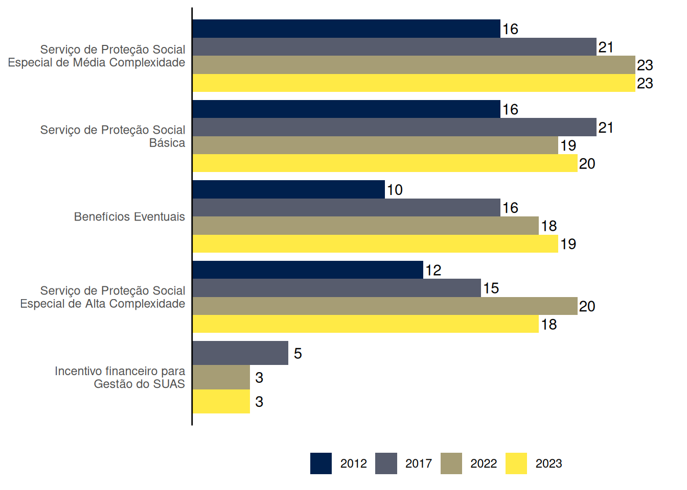
O ordenador de despesa responde pela autorização de pagamento dos recursos do Fundo de Assistência Social. Recomenda-se que ele tenha amplo conhecimento sobre a política. O Gráfico 2.15 mostra que em 2023 houve um aumento no número de Estados que tinham a/o Secretária/a Estadual de Assistência Social como ordenador de despesa do fundo estadual, saindo do menor nível da série histórica em 2022, 73% dos Estados, para o maior, 88% dos Estados, igualando 2023 à situação observada em 2013.
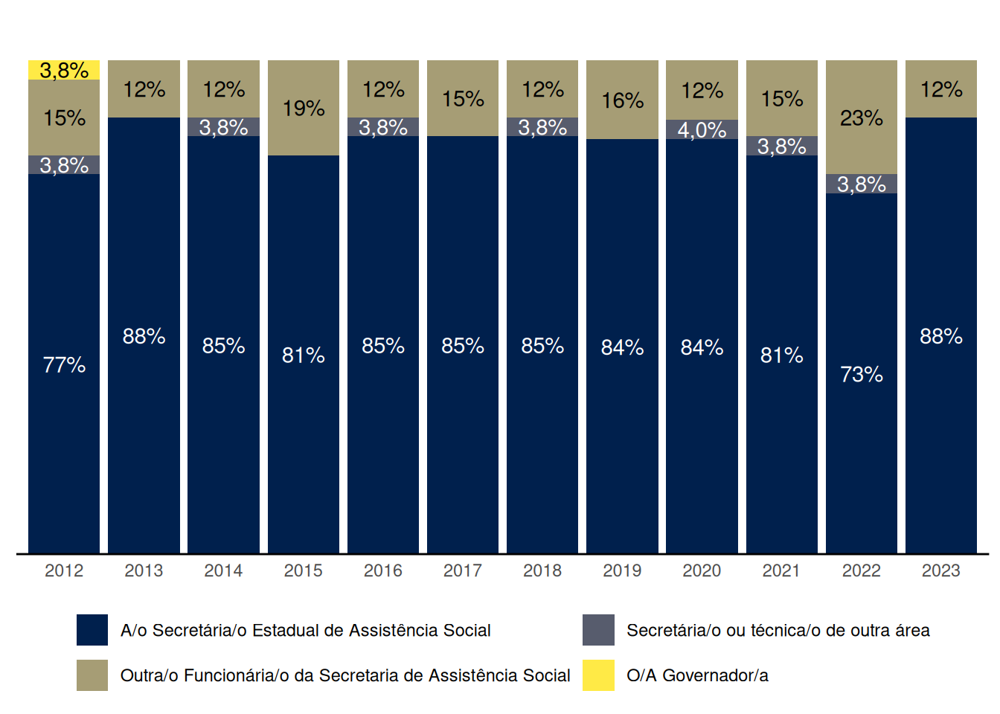
No que se refere aos Municípios, aumentou para 82% o percentual das/os secretárias/os municipais de Assistência Social que são ordenadores de despesa do Fundo Municipal. Esse percentual vem aumentando desde o começo desta série histórica em 2012, quando era de apenas 53% (Gráfico 2.16)
O Gráfico 2.16 também mostra mais uma redução no percentual de prefeitas/os que são as/os ordenadoras/es de despesa da política de Assistência Social, caindo agora para 15% dos municípios, percentual que era 40% no início desta série histórica em 2012. Esta redução é considerada positiva, pois o gestor municipal, por estar mais próximo do cotidiano do planejamento desta política pública, provavelmente está em melhores condições para tomar as decisões sobre o orçamento.
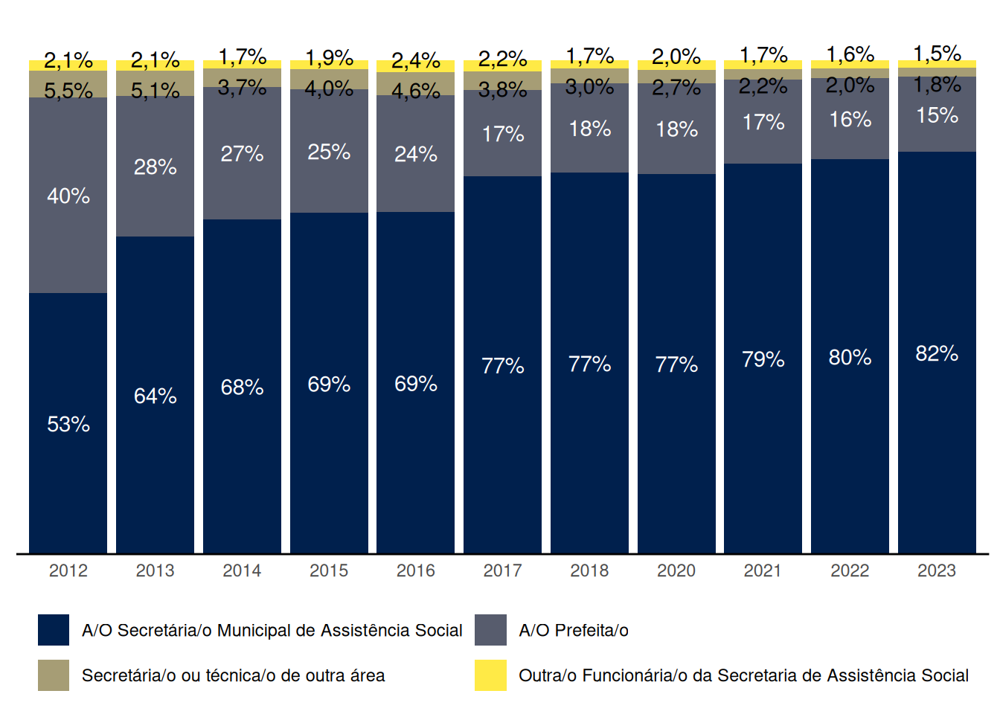
2.3 Programas de execução própria executadas pelos Estados
Em relação aos programas próprios de transferência de renda executados pelos Estados, registrou-se em 2023 o maior número de Estados que informaram possuir programas próprios, 18 Estados, mesmo número registrado em 2021 (Gráfico 2.17).
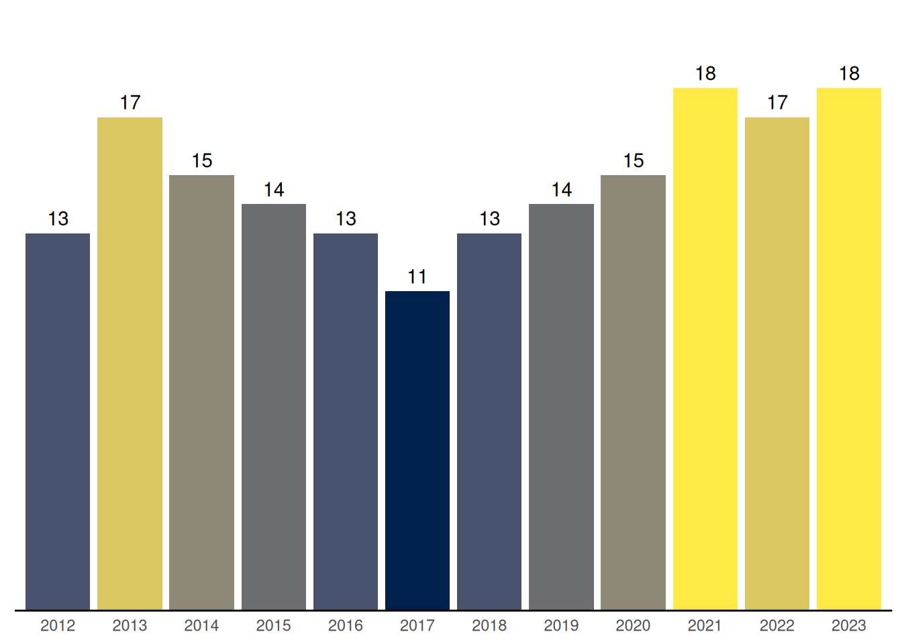
2.4 Gestão do Cadastro Único6
O Cadastro Único para Programas Sociais do Governo Federal (Cadastro Único) instituído pelo art. 6º-F da Lei nº 8.742, de 7 de dezembro de 1993 (Lei Orgânica da Assistência Social), e regulamentado atualmente pelo Decreto nº 11.016, de 29 de março de 2022, tem a finalidade de coletar, sistematizar e disseminar informações que permitam a identificação e caracterização das condições socioeconômicas das famílias em situação de vulnerabilidade social, sobretudo para as famílias de baixa renda.
O objetivo é conhecer, incluir e aprimorar as políticas sociais através do acesso a serviços, programas, benefícios, identificação das famílias e territórios vulnerabilizados, bem como a realização de ações intersetoriais.
A gestão do Cadastro Único é compartilhada entre União, Estados, Municípios e Distrito Federal. Cabe aos Estados o apoio técnico, capacitação, monitoramento e avaliação. É nos Municípios que estão os locais de cadastramento e toda gestão territorial da identificação das famílias neste cadastro público.
As unidades do Cadastro Único podem ser encontradas em locais exclusivos ou na rede de atendimento socioassistencial de CRAS, CREAS e Centro POP. O Censo SUAS mostra um aumento na quantidade de locais de cadastramento.
Apesar da maioria dos locais de cadastramento serem os CRAS, com mais do que o dobro de unidade em relação ao número de postos exclusivos para o Cadastro Único, o número destes postos exclusivos, em 2023, como em 2022, aumentou mais do que aumentou o número de CRAS, conforme pode ser observado na Tabela 2.1.
| Unidades | 2017 | 2018 | 2019 | 2020 | 2021 | 2022 | 2023 |
|---|---|---|---|---|---|---|---|
| CRAS | 5.669 | 5.508 | 5.923 | 5.729 | 5.937 | 6.090 | 6.140 |
| CREAS | 281 | 174 | 199 | 199 | 208 | 230 | 191 |
| Centro POP | 112 | 83 | 84 | 108 | 106 | 115 | 131 |
| Postos de Cadastro Único | - | - | - | 2.530 | 2.695 | 2.892 | 3.037 |
| Total | 6.062 | 5.765 | 6.206 | 8.566 | 8.946 | 9.327 | 9.499 |
O Gráfico 2.18 mostra os locais de funcionamento dos Postos de Cadastro Único. Vemos que a maioria funciona na Sede da Secretaria da Assistência Social ou congênere, mas este percentual vem caindo gradualmente a cada ano, chegando a 59% em 2023. Já o percentual de postos que funcionam em locais exclusivos para atendimento do Cadastro Único teve pequena alta em 2023, chegando em 26%.
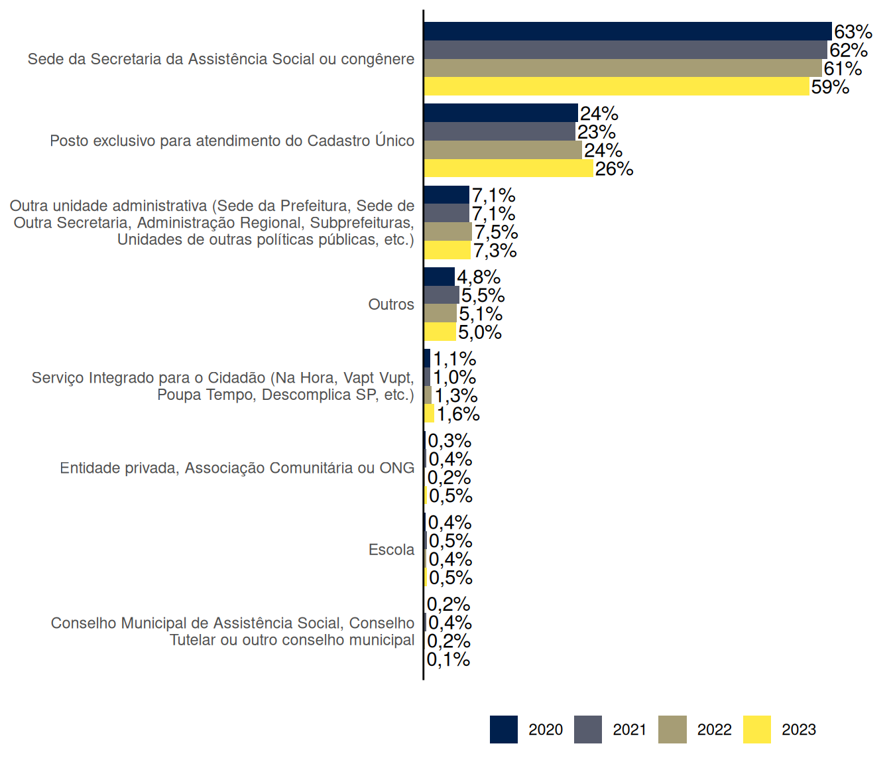
No que se refere à promoção pelos Municípios de ações de capacitação sobre o Cadastro Único, observamos no Gráfico 2.19 que o percentual de Municípios que não promoveram estas ações de capacitação vem caindo a cada ano, saindo de 47% em 2020 e chegando a 29% em 2023. Essa queda veio com o aumento da promoção de ações de capacitação ofertadas pelo próprio gestor do Cadastro Único, que subiu de 24% em 2020 para 31% em 2023; das ações promovidas por servidores da equipe do Cadastro Único e/ou Assistência Social, de 23% em 2020 para 29% em 2023; das ações promovidas por consultores externos, de 17% em 2020 para 27% em 2023 e das ações promovidas por outros meios não listados no Censo, de 7,0% em 2020 para 11% em 2023. Já o percentual de municípios que promoveram ações de capacitação por instituições de ensino cresceu até 2022 e teve pequena queda em 2023, de 5,6% em 2022 para 5,2% em 2023, sendo este o meio dentre os listados no questionário do Censo menos utilizado pelos Municípios para promoção de ações de capacitação sobre o Cadastro Único.
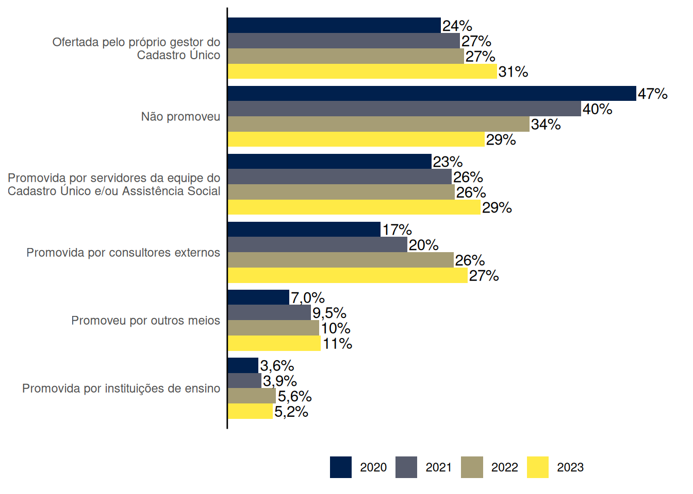
O Censo SUAS mostra uma queda nos últimos dois anos no percentual de Municípios que realizavam e acompanhavam a inserção e atualização das/os beneficiárias/os do BPC no Cadastro Único, como mostrado no Gráfico 2.20.
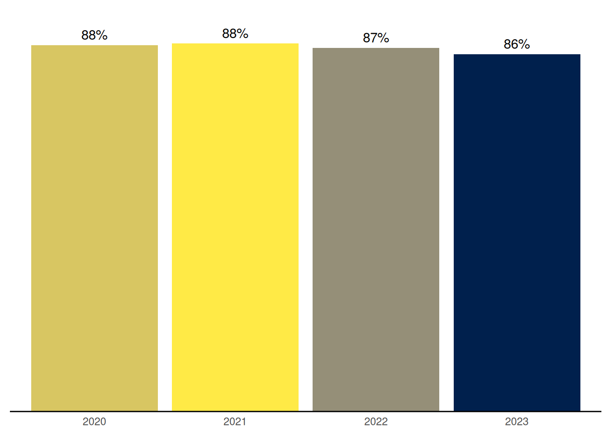
Faz parte de procedimentos de qualificação do Cadastro Único ações de Averiguação e de Revisão Cadastral. A Averiguação é um processo de verificação das informações registradas no Cadastro Único por meio da comparação dos dados declarados pelas famílias com outros dados e registros administrativos do Governo Federal. Já a Revisão Cadastral é um procedimento de atualização das famílias com registros desatualizados. Um cadastro é considerado desatualizado se estiver há mais de 24 meses sem atualização.
O Gráfico 2.21 mostra o percental de Postos de Cadastro Único que fazem ações específicas para atender demandas de Averiguação e Revisão Cadastral. A busca ativa das famílias de Averiguação e Revisão Cadastral é a ação mais realizada, e, após recuo de 3 pontos percentuais em 2022, chegou em 2023 ao percentual máximo da série histórica desde 2020, com 82% dos Postos de Cadastro Único relatando a realização desta ação. A segunda ação mais realizada é a colocação das famílias de Averiguação e Revisão Cadastral no público prioritário de atendimento na unidade, ação que cresceu de 53% em 2020 para 66% em 2022, recuando em 2023 para 64% dos Postos de Cadastro Único.
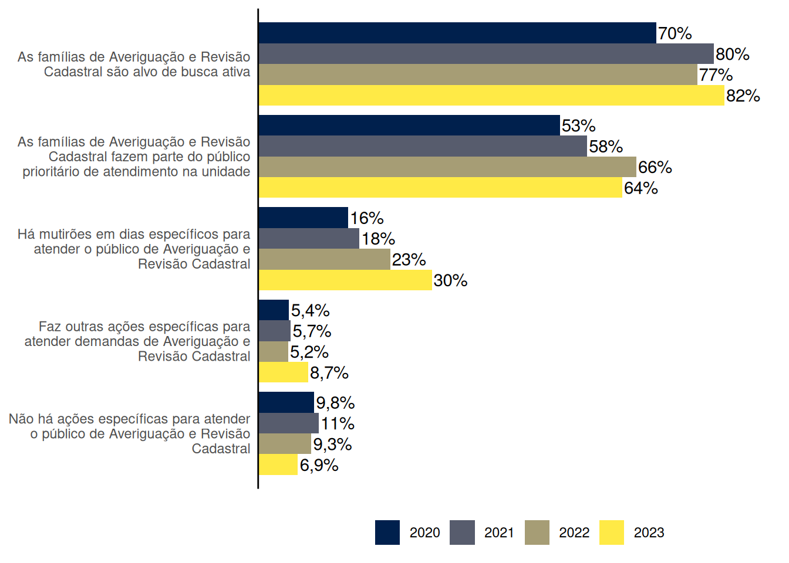
O Gráfico 2.22 mostra as situações que levam os Postos de Cadastro Único a realizarem entrevistas domiciliares. Destaca-se em 2023 o aumento em 10 pontos percentuais nos Postos que relataram realizar entrevistas domiciliares para famílias incluídas em Averiguação Cadastral, de 42% em 2022 para 52% em 2023, situação que é a mais frequente motivação para realização das entrevistas domiciliares pelos Postos de Cadastro Único. Destaca-se também em 2023 o aumento no percentual de Postos que realizaram entrevisas domiciliares para apurar denúncias, de 40% em 2022 para 43% em 2023, ultrapassando a frequência da situação em que as entrevistas domiciliares são realizadas para inclusão ou atualização de dados de famílias com BPC, que caiu de 41% em 2022 para 40% em 2023 (percentual este que vem caindo 1 ponto percentual a cada ano desde o início da série em 2020). Os percentuais de Postos que realizaramm entrevistas domiciliares em todas as outras situações cresceram em 2023 e chegaram aos valores máximos das séries históricas desde 2020.
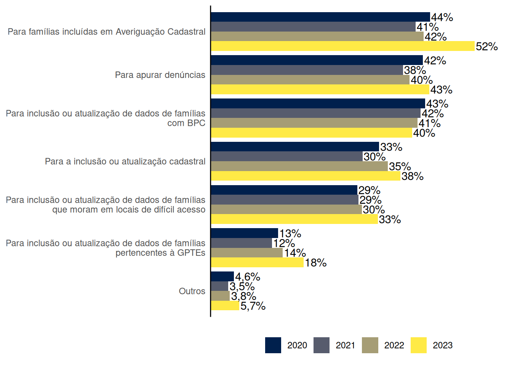
Vemos no Gráfico 2.23 os percentuais dos diversos tipos de relacionamento dos Postos de Cadastro Único com os outros equipamentos da rede socioassistencial (CRAS, CREAS, Centro POP, entre outros). Menos de 1% dos Postos relataram não se relacionar com outros equipamentos da rede socioassistencial.
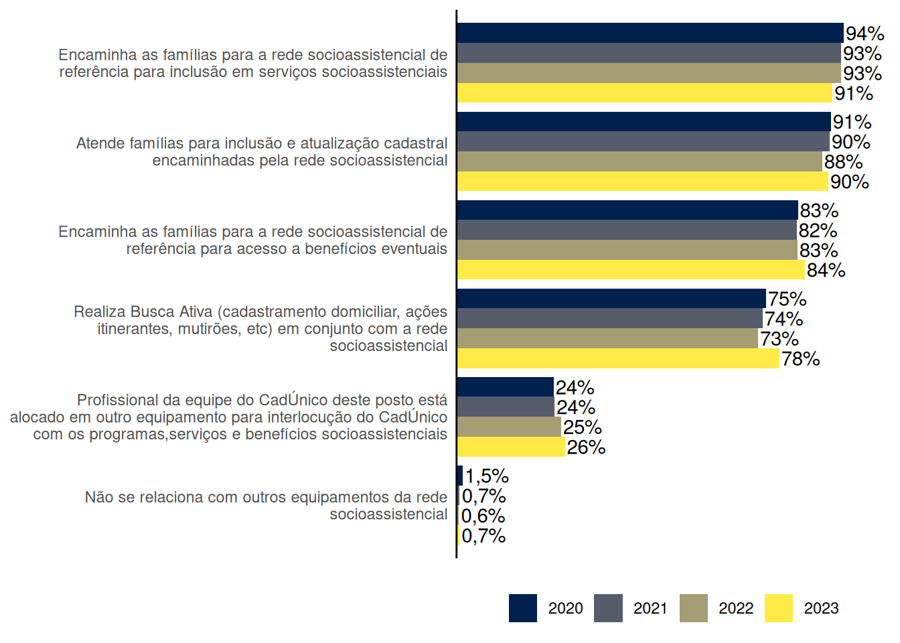
Estados: Acre, Amazonas, Pará, Amapá, Piauí, Paraíba, Sergipe e São Paulo↩︎
Lei nº 12.435, de 06/07/2011, altera a Lei Organiza da Assistência Social (LOAS) nº 8.742, de 07/12/1993↩︎
Resolução CNAS Nº2, de 16 de março de 2017↩︎
Capítulo III - NOBSUAS/2012↩︎
Art. 30-A. O cofinanciamento dos serviços, programas, projetos e benefícios eventuais, no que couber, e o aprimoramento da gestão da política de assistência social no Suas se efetuam por meio de transferências automáticas entre os fundos de assistência social e mediante alocação de recursos próprios nesses fundos nas 3 (três) esferas de governo.↩︎
O formulário do Censo SUAS sobre os postos do Cadastro Único foi introduzido em 2020, por isso as informações no Censo SUAS sobre estas unidades estão dispníveis a partir desta data.↩︎